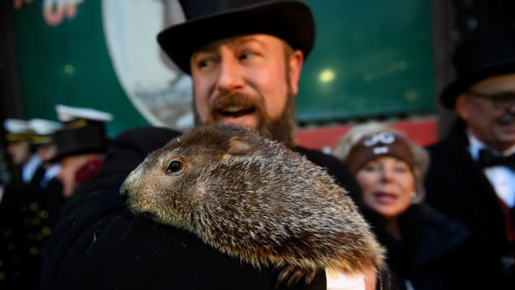
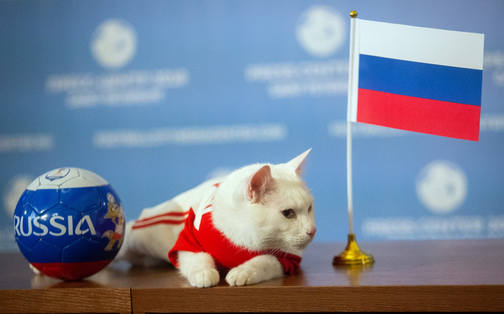

Recent Event Predictions
February 2, 2019 - Punxsutawney Phil fails to see his shadow, signaling an early spring. Cajun groundhog Pierre C. Shadeaux disagrees.
June 15, 2018 - Achilles the Cat successfully predicts the winner in the opening match of the 2018 World Cup.
Feb 2, 2018 - Punxsutawney Phil sees his shadow, predicting six more weeks of winter, while the "cajun groundhog" Pierre C. Shadeaux predicts an early spring.
Fall 2016 - Geda the Monkey successfully predicts the outcome of the 2016 US Presidential Election.
2009-2014 - Eli the Orangutan correctly predicts the winner of the Super Bowl six years in a row.